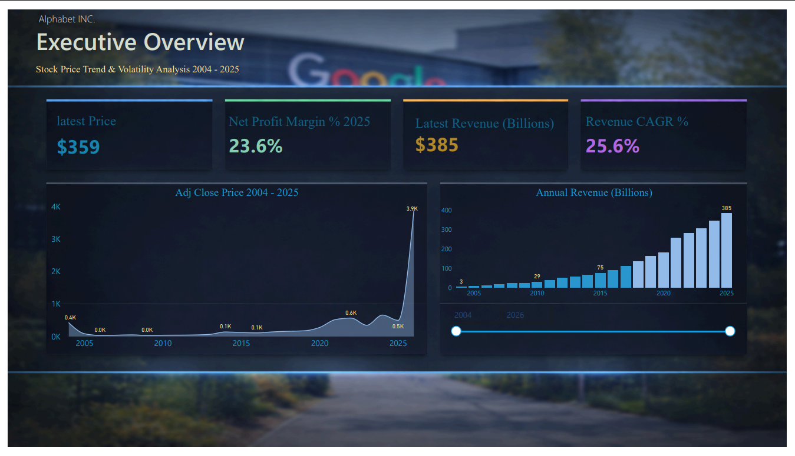
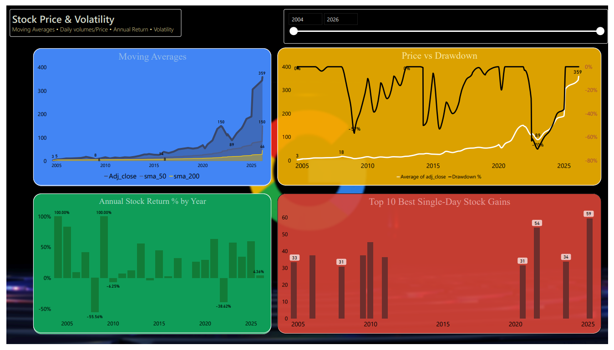
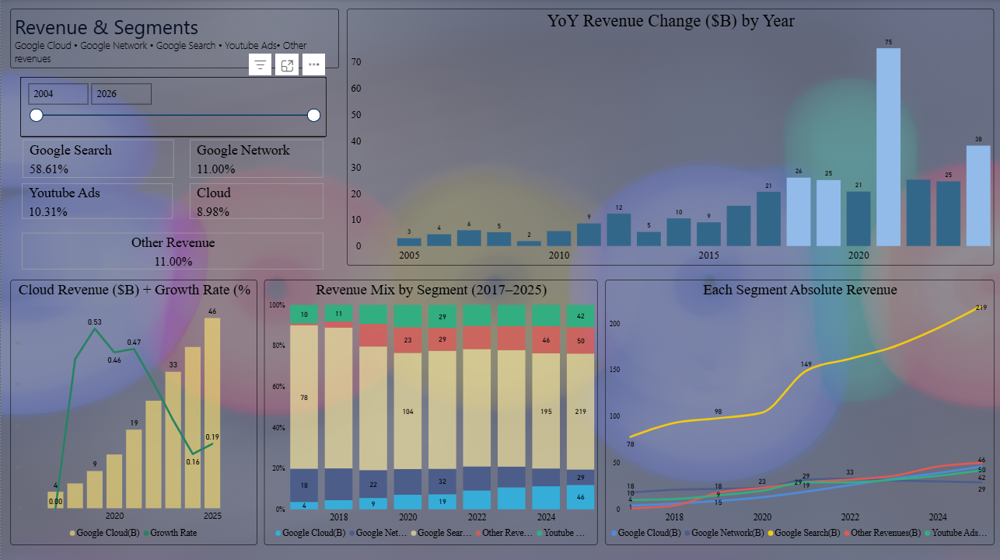
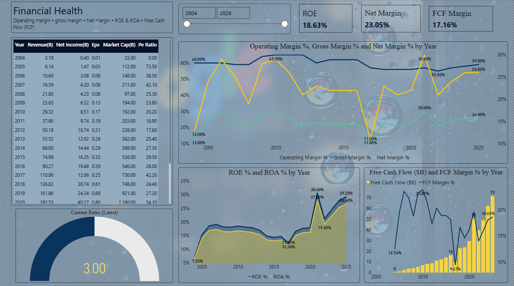

From 21 years of raw GOOGL historical data to a 4-page interactive Power BI dashboard — tracking long-term compounding, volatility cycles, revenue evolution, and financial health across 2004–2025.
Alphabet's raw historical dataset spans 6 tables-daily stock prices, annual financials, quarterly earnings, revenue segments, financial ratios, and company milestones. The goal was to model this data in PostgreSQL, run analytical queries to surface the patterns that matter, then translate them into a 4-page Power BI dashboard that answers the questions a financial analyst would actually ask: How did $10,000 at IPO become $1.69M? When did volatility spike and why? Which revenue segment is growing fastest? Is the balance sheet getting stronger or weaker?
The output is a 4-page dashboard-Executive Overview, Stock Price & Volatility, Revenue & Segments, and Financial Health. each telling a distinct part of Alphabet's 21-year growth story.
This first dashboard gives you a high level view of the four main numbers that tell the story of Google over the last two decades. Right now the stock price sits at 359 dollars. That might sound a little low if you remember the stock trading in the thousands but that is just because the company split its stock a couple of times. They basically chopped the expensive shares into smaller cheaper pieces so more normal people could afford to buy them. The most important number on this whole page is the 25.6 percent revenue CAGR. CAGR is just a fancy financial term that stands for Compound Annual Growth Rate. It basically means the company grew the money it brings in by over 25 percent every single year on average. To put that into perspective the overall stock market usually only grows by about 10 percent a year so Google was absolutely crushing the average.
The stock price chart shows the entire journey from 2004 all the way to 2025 where you can see the long steady climb upward. The revenue chart next to it tells an even clearer story of just how massive this company became. Back in 2004 they were barely making anything compared to today. They finally crossed the 100 billion dollar mark in 2018 and by 2025 they were bringing in a staggering 385 billion dollars a year.

The first chart tracks the stock price using something called Simple Moving Averages or SMA. An SMA is just the average price of the stock over a set amount of time like 50 days or 200 days. Looking at an average instead of daily prices smooths out the chaotic daily jumps so you can actually see the real trend. Most of the time the 50 day average and the 200 day average track pretty close together but during big market panics like the 2008 financial crisis and the 2022 market drop they drifted far apart. In 2022 the shorter 50 day average actually crossed below the longer 200 day average. Traders call this a Death Cross because it usually signals a really bad time for the stock. Sure enough that same year the stock had its worst year on record and dropped almost 39 percent. But here is the bright side because every time the stock crashed like this it recovered and hit brand new record highs within a year and a half.
The next chart looks at something called Drawdown. A drawdown just measures how far the stock price has fallen from its absolute highest point. The chart uses a white line to show these drops and it really puts the risk into perspective. In the early days of the company the stock would regularly drop 60 to 80 percent from its peak. As the business grew bigger and more stable those massive drops happened less often. However even recently in 2022 it still dropped 70 percent from its top before climbing back up. This shows that anyone wanting to hold this stock for the long haul needs to be prepared for some scary drops along the way.
The last part shows the yearly returns and the best single days for the stock. You can really see the massive ups and downs here. The stock completely doubled in value during 2004 and 2007 but then lost over half its value in 2008. It had a nice steady run of winning years from 2010 to 2021 before taking a big hit in 2022 and bouncing back again. We also included a table of the top 10 best days the stock ever had. On the absolute best day recently the stock price jumped by 59 dollars in just one day. These massive single day jumps almost always happen right after an earnings surprise which is just when the company publicly announces they made a lot more money than experts thought they would.

Context on 2022: Why did the stock drop 39% that year? It wasn't fundamentally a Google problem. The entire tech sector took a massive hit because the Federal Reserve was aggressively hiking interest rates, and companies started slashing their digital ad budgets out of fear of a looming recession.
The revenue mix breakdown across the full period shows Google Search at 58.61% of total revenue — still dominant, but declining from its historical 70%+ share as Cloud and YouTube scale. Google Network holds 11%, YouTube Ads 10.31%, Cloud 8.98%, and Other Revenue 11%.
The YoY Revenue Change chart is where the macro story becomes visible. The $75B single-year jump (visible as the tallest bar, approximately 2021) represents the post-COVID ad market surge — the largest absolute revenue increase in Alphabet's history. The chart then shows a deceleration phase before re-accelerating toward 2025.
Cloud tells the most important forward-looking story. From $4B in revenue (2017) to $46B (2025), the Cloud Revenue + Growth Rate chart shows the bar growing steadily while the growth rate line starts high (0.53 in 2019), compresses as the base scales, then stabilises around 0.19 by 2025. At $46B with positive operating margins, Cloud is no longer a cost centre — it's a profit engine. The Revenue Mix stacked bar and Each Segment Absolute Revenue line chart confirm Search's slow share decline and Cloud's rising trajectory simultaneously.

Revenue & Segments — segment share KPIs, YoY revenue change, Cloud revenue + growth rate, revenue mix by segment (2017–2025), and each segment's absolute revenue trajectory.
The financial health dashboard confirms what the revenue story implies — Alphabet's profitability has been remarkably consistent across two decades. Gross margin has held between 55–65% across the entire period, a hallmark of platform-based businesses with near-zero marginal cost of distribution. Operating margin fluctuated more — dipping in 2012–2013 during heavy infrastructure investment, recovering to 30%+ by 2021, then compressing again during the 2022 cost-heavy period before bouncing back.
The ROE and ROA chart shows the efficiency trajectory clearly. ROE peaked at 30.60% in 2021, compressed to 19.30% in 2022, and recovered to 27.80%–29.20% by 2024–2025. ROA has tracked consistently below ROE (as expected), confirming the business isn't overleveraged. The Current Ratio of 3.00 (gauge visual, bottom left) confirms strong short-term liquidity — Alphabet can cover its current liabilities three times over with current assets.
Free Cash Flow tells perhaps the most compelling balance sheet story. FCF grew from near-zero in the early 2000s to $72B by 2025, with FCF Margin stabilising around 18.65% — meaning Alphabet converts roughly one in every five revenue dollars into free cash. This funds the buyback programme, the inaugural dividend (April 2024), and ongoing AI infrastructure investment simultaneously.

Financial Health — ROE/ROA KPIs, net margin KPI, FCF margin, margin trend lines (gross/operating/net), ROE & ROA by year, free cash flow + FCF margin, and current ratio gauge.
2008 (−55.56%), 2022 (−38.62%), and every major drawdown in between were followed by new all-time highs. The drawdown chart shows peak-to-trough drops of −60 to −80% in the early years — all recovered. Long-term holders were rewarded every time.
Cloud grew from $4B (2017) to $46B (2025) — a 10× increase in 8 years. It turned profitable in Q1 2023 and now runs at ~19% growth with expanding margins. It is on track to become Alphabet's #2 revenue segment by 2027.
Search dropped from ~70% of revenue in 2017 to 58.61% by 2025. Not because Search is declining in absolute terms (it grew from $78B to $219B), but because Cloud and YouTube are scaling faster. Less concentration risk, not less Search strength.
Alphabet converts ~1 in every 5 revenue dollars to free cash. At $72B FCF in 2025, it simultaneously funds $70B+ in annual buybacks, the first-ever dividend, and AI infrastructure buildout — without debt.
The biggest volatility spikes (2008 GFC, 2020 COVID crash, 2022 rate hikes) are all macro events, not business deterioration. Revenue and FCF kept growing through 2022 even as the stock fell −38.62%. The business and the stock price temporarily decoupled.
Despite 120× revenue growth, gross margin never dropped below 55%. This is the signature of a platform business — marginal revenue costs almost nothing to add. Operating margin fluctuated more due to investment cycles, but the gross margin floor held firm.
Sourced 6 CSV datasets covering daily stock prices (185 rows), annual financials (22 years), quarterly earnings (2020–2025), revenue segments (2017–2025), financial ratios, and company milestones. Mapped relationships across tables using Year and Date as primary join keys before writing any SQL.
Built CREATE TABLE schemas in pgAdmin, imported all 6 CSVs, and wrote 15 analytical queries — including window functions (LAG, STDDEV OVER, AVG OVER) for rolling volatility and year-over-year returns, CTEs for CAGR calculation, Pearson correlation for volume-price analysis, and multi-table JOINs to link stock performance with financial ratios.
Used Excel to validate SQL output, explore preliminary distributions — margin trends, segment share shifts, annual return patterns — and identify the most analytically interesting angles before committing to the Power BI layout. All 6 CSVs were cleaned (date formatting, null handling, UTF-8 encoding) before import.
Connected Power BI directly to PostgreSQL, built a data model with table relationships on Year and Date keys, and created a Date dimension table for time intelligence. Wrote DAX measures for CAGR, YoY revenue growth (SAMEPERIODLASTYEAR), rolling volatility, net margin, FCF margin, and annual stock return. Delivered 4 interactive pages with year slicers, KPI cards, line charts, bar charts, a drawdown overlay, and a current ratio gauge.